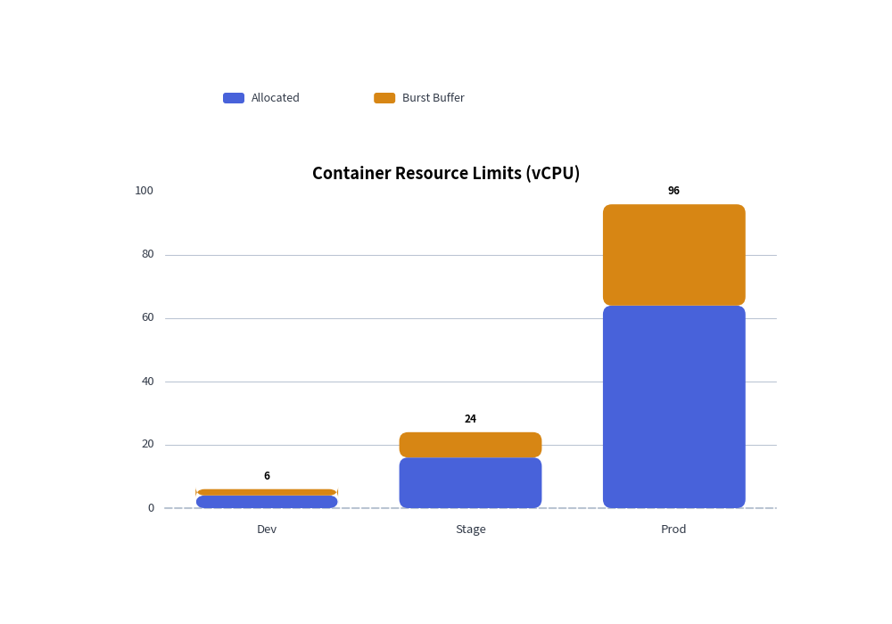

Bar Chart
The BarChart component renders vertical or horizontal bar charts for comparing categorical metrics.
It supports multi-series grouping, stacked bars, custom corner radii, value annotations, and decoupled legend rendering.
1. Quick Example: Stacked Resource Allocation

2. Modes and Orientations
orientation:"vertical"(default): Columns grow upward from the bottom X-axis."horizontal": Bars grow rightward from the left Y-axis.
bar_mode:"group"(default): Side-by-side clustered bars for comparing distinct series across categories."stack": Accumulates series vertically/horizontally to show part-to-whole proportions.
r: Corner rounding radius applied to the outer edges of the bars.value_text_style: When provided (notNone), numerical values are automatically printed directly on the bars.draw_legend: Decoupled legend rendering at any coordinate on the canvas.
3. Class API Reference
Constructor
BarChart(
categories: list[str],
axis_line_style: Style,
axis_text_style: Style | None = None,
grid_style: Style | None = None,
value_text_style: Style | None = None,
background_style: Style | None = None,
title: str = "",
title_style: Style | None = None,
width: float = 60.0,
height: float = 40.0,
orientation: Literal["vertical", "horizontal"] = "vertical",
bar_mode: Literal["group", "stack"] = "group",
bar_width_ratio: float = 0.7,
r: float = 0.0,
)
Adding Data & Rendering
add_series(name: str, values: list[float], style: Style, legend_text_style: Style | None = None):
Registers a series.valuesmust align with the length ofcategories.draw(xy=(0.0, 0.0)):
Renders the chart body anchored at bottom-leftxy.draw_legend(xy, text_style, orientation="vertical", swatch_size=(2.4, 1.2), item_gap=4.0):
Renders the series legend at coordinatexy.